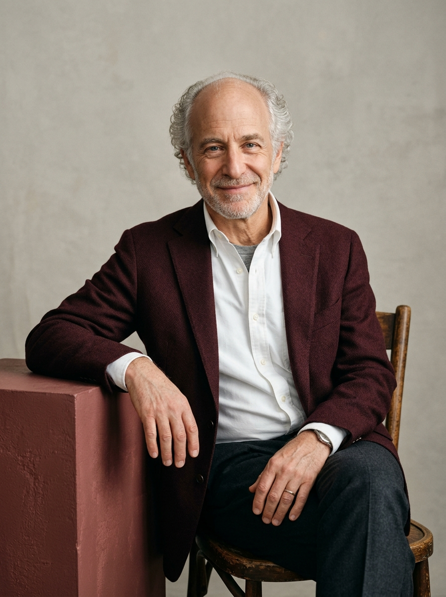
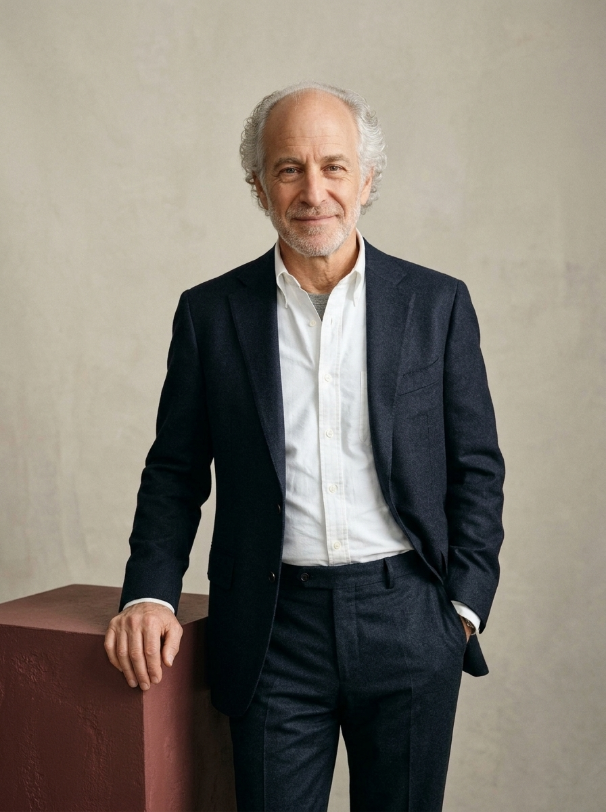

Студийные концепт-портреты в стиле Sentio / Monocle и оригинальные архивные фото

Д-р Амсэль в благородном темно-бордовом шерстяном блейзере и белой сорочке, задумчиво опирающийся на геометрический куб в эстетике Financial Times / Monocle.

Д-р Амсэль в классическом темном костюме, стоящий рядом с бордовым архитектурным блоком — транслирует академический вес и непререкаемый судебный авторитет.
Студийный снимок с портала кафедры психиатрии Колумбийского университета.
Фотография с заседания междисциплинарного интеллектуального клуба в Манхэттене.
Кадр публичного доклада «The Mathematics of Psychiatry».